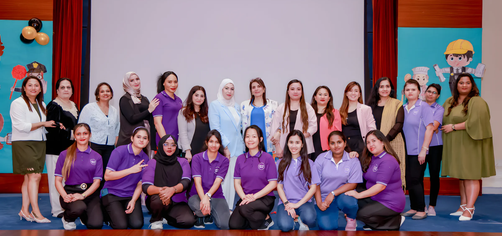
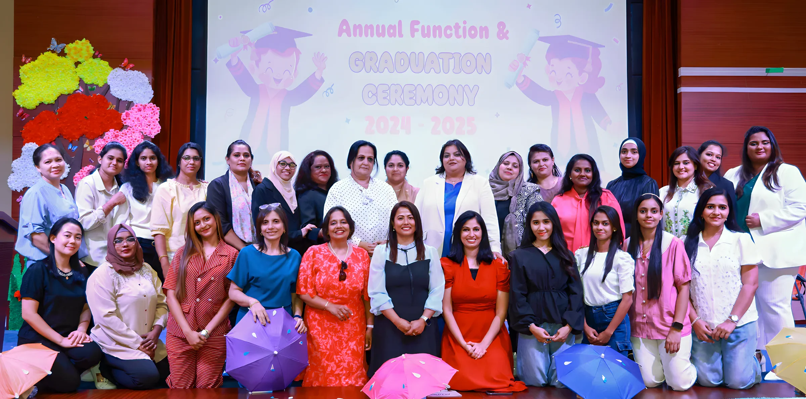

Big steps with little feet
Little Feet opened in Sharjah in 2003. It has grown from a single branch into three, in Al Khan, Al Khalidiya and Al Jazzat, and more than 2,000 children have gone on from us to big school.

Our teachers and staff at the annual function, 2025.
A note from our manager
"Wise sayings from the past quote children as being the greatest treasure of any society, this is also what we strongly believe at Little Feet Nursery."
Ms. Hetal RajpuraManager, Al Khan branch
"Our teachers are all extensively trained, highly creative, and fun loving mentors … They are Montessori trained and SPEA certified in addition to their graduation degree. They are equipped to handle any situation as they are regularly given training on state of the art systems in fire-safety, health, hygiene & first aid."
"Our Montessori labs are equipped with modern experiments that improve children's mental and physical development. Along with Montessori, in the recent past, we have integrated STEAM into the curriculum and have seen kids increase their creativity and interest in various fields."
"We have been one of the very few nurseries who successfully continued our work into online mode within a very short span of time, thus ensuring continuity for all our students."
From Ms. Hetal Rajpura's welcome letter on littlefeetuae.com.
Since 2003
Twenty-three years of first school days in Sharjah.
- 2003Little Feet opens its first branch in Sharjah.
- 3Branches today: Al Khan, Al Khalidiya and Al Jazzat, each with its own Montessori labs and play areas.
- 2,000+Children who have gone on from Little Feet to big school.
- 2026Winner of the Edarabia Parents' Choice Award for Sharjah.
What we believe
From our vision, mission, values and goals.
Vision
The best Montessori-based learning, with qualified teachers working in partnership with parents, so every child can develop as a whole person in a safe, child-friendly place.
Mission
A stimulating, nurturing and supportive place where young children discover their importance, enjoy learning, and get quality education based on Montessori at an affordable fee.
Values
Every child is welcome, whatever their race, colour, religion, gender or nationality. And we keep improving how we serve children and their families.
Goals
A safe haven where children are happy, a close bond with every family, and a workplace built on ethics, professionalism, creativity and growth.
The Al Khan team
"Caring hands for little feet" is our slogan, and these are the hands. Managers, teachers, assistants and our nurse.
- Ms. Hetal Rajpura Manager
- Ms. Upahar Chhetri Assistant Manager
- Ms. Sunitha Binoy Nurse
- Ms. Rasha Elsadek Teacher
- Ms. Shafna Sherin Teacher
- Ms. Rabbiya Ahmed Teacher
- Ms. Fathima Fazmela Teacher
- Ms. Sania Ali Teacher
- Ms. Jagruti Nitin Assistant Teacher
- Ms. Shibi Saji Assistant Teacher
- Ms. Krishka Sayuri Assistant Teacher
- Ms. Shenoli Thashiya Assistant Teacher
- Ms. Deepika Thakkar Social media
- Ms. Thilini Ishani Social media
- Ms. Gayatri Devi Social media

Staff at the 2024–2025 annual function and graduation ceremony.
Come and meet the teachers.
Send us your child's age and the branch you'd like to see, and we'll find a time.